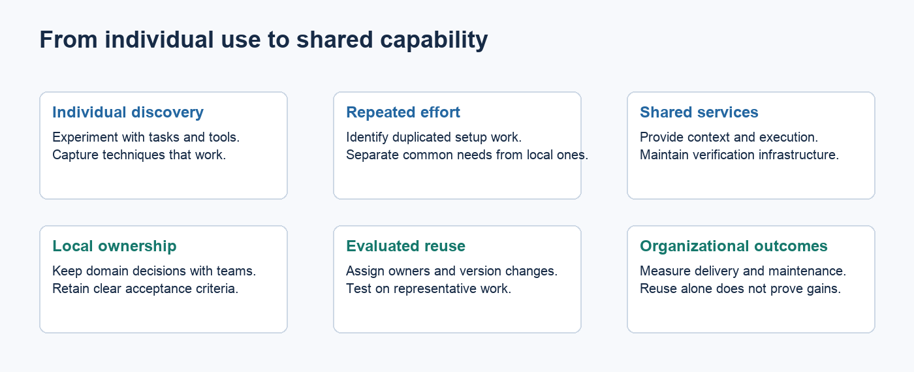
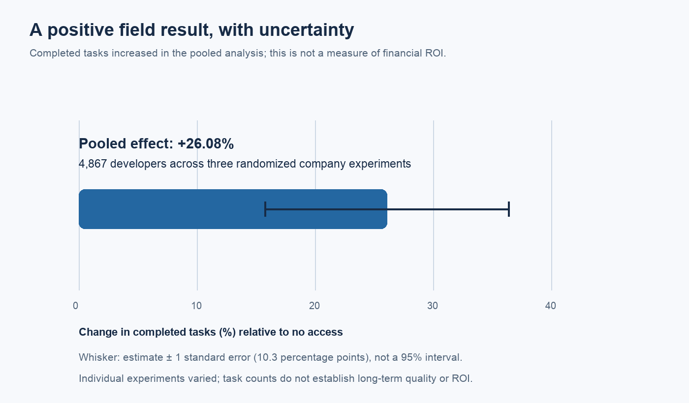
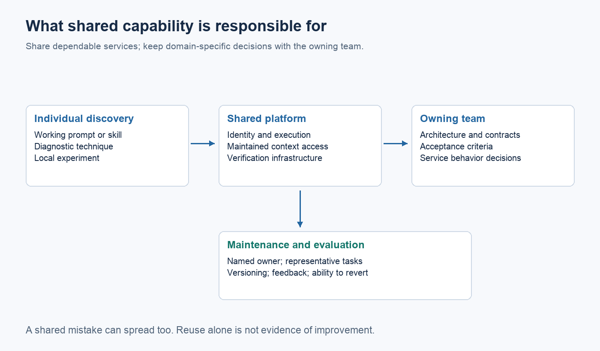

Your engineers use AI. Does your engineering organization?

Key points
- Individual tool adoption and shared engineering capability are different things.
- Personal workflows can help engineers while leaving context assembly and verification dependent on those individuals.
- A platform should make proven practices reusable, with clear ownership and evidence that they help.
- Standardize dependable services and controls while allowing teams to retain domain-specific workflows.
- Shared systems also spread mistakes. Evaluate changes before rolling them out broadly.
- Judge the platform by effort saved and delivery outcomes, alongside developer experience.
An engineer can have an excellent AI workflow while the organization has little idea how it works. Their prompts, repository guidance, and diagnostic scripts live in a personal setup. Other engineers develop their own versions. When something goes wrong, each person works out how to recover.
That experimentation is useful. The problem starts when leadership treats widespread tool use as evidence that the organization has acquired a dependable engineering capability.
A useful test is what would remain if the team's most experienced AI users left. Would other engineers inherit maintained tools and documented decisions, or a folder of prompts they don't know how to use?
Individual gains are a starting point

*Measured task-completion effect from Cui et al., 2026. The whisker is ±1 standard error, not a 95% confidence interval. This is one pooled estimate, not an estimate of ROI.*
Figure sources and methodology
An engineer who knows a repository can supply context that the agent can't easily infer. They know which tests matter and where an apparently simple change needs a second opinion. Their workflow may be highly effective because of that judgment.
Positive evidence shouldn't be dismissed. Cui and colleagues' field experiments found increased task completion across 4,867 developers. That supports evaluating AI seriously; it doesn't tell an organization which shared services it should build. Management Science
The platform question is what part of a successful workflow can be made dependable for other people. A reusable command that reproduces a failure may transfer well. A long prompt whose assumptions only its author understands may not.
The answer takes investigation. Talk to engineers about the context they repeatedly supply and the time they spend checking results. Look for work the team has solved several times.
The engineer remains the integration layer
A personal workflow often connects systems that were never designed to work together. The engineer finds an architecture decision, supplies service documentation, runs a diagnostic tool, and interprets the output for the agent. After generation, they put the result into the existing review process.
That work has a cost even when it becomes routine. If every engineer repeats it, the organization pays repeatedly. If one engineer is especially good at it, the organization may become dependent on that person.
Kumar and colleagues' developer–agent study found that collaboration and incremental problem-solving mattered in the issues they observed. It is a small study, but it helps identify human work that a tool-use statistic overlooks. Developer–agent collaboration
A shared platform can remove some repetition while preserving judgment. It might provide a known test environment and a reliable way to retrieve the owning team's current contract. The engineer still decides whether the requested change makes sense.

*Proposed ownership map informed by SWE-agent and DevEx. The ownership boundary is a design choice, not a measured maturity standard.*
Figure sources and methodology
Share capabilities with owners
A shared skill needs an owner, a purpose, and examples of where it works. A context service needs a freshness policy. A verification workflow needs someone responsible when a previously useful check becomes flaky.
Without maintenance, standardization can preserve yesterday's mistakes. A centrally distributed instruction is especially costly when every agent follows it.
The evaluation of AGENTS.md files offers a useful warning: context files did not generally improve success in the tested settings and increased inference cost. Writing guidance once and sharing it widely doesn't establish value. Repository context study
Try an improvement on representative tasks before general release. Include cases where it should make no difference and cases where it could cause trouble. Keep it easy for a team to report a failure and revert a platform change.
Give teams reliable services, not identical workflows
A platform can provide authenticated execution, reproducible environments, and records of agent actions. It can make approved model access available and supply interfaces to maintained context. Those are services teams can combine with their own domain knowledge.
A payments service and an internal documentation site need different acceptance checks. A single company-wide prompt will struggle to express those differences without becoming cumbersome. Shared defaults should have explicit ways to specialize them within the organization's controls.
| Shared responsibility | Team responsibility | | --- | --- | | Identity and permitted tool access | Scope of a particular engineering task | | Execution environment and records | Domain-specific commands and dependencies | | Context access and source metadata | Accuracy of the team's architecture and service knowledge | | Verification infrastructure | Acceptance criteria and relevant tests | | Platform monitoring | Decisions about the service's behavior |
The boundary will vary by organization. Treat it as a design decision that can change when repeated friction appears.
Agents are another kind of platform user
Interfaces designed for an engineer at a terminal may be awkward for an agent. Error messages can assume knowledge the model doesn't have. A command might return pages of output without a clear status. An interactive login can interrupt an unattended task.
SWE-agent's research examined interfaces suited to agents and demonstrated the importance of that environment in benchmark tasks. A platform serving agents should evaluate its interfaces too, rather than assuming a human-oriented tool is sufficient. SWE-agent
Human usability still matters. Engineers need to understand what ran and intervene when necessary. The machine interface and the investigation interface should expose the same underlying state.
Support the work of turning experiments into infrastructure
Successful experiments don't maintain themselves. Someone has to test variations, resolve disagreements, and adapt the workflow as the repository or tool changes.
MIT Sloan describes a two-year study in healthcare and law linking sustained AI experimentation to support for this additional work. These cases are outside software engineering, but they caution against expecting organizational capability to emerge from spare-time experiments. MIT Sloan
Give engineers a route to contribute improvements and time to do it. The platform team should help turn a promising local solution into a supported service. It should also be willing to leave a practice local when sharing it would add more maintenance than benefit.
Measure whether sharing helped
Choose a repeated problem and establish its current cost. Then compare the shared workflow with the existing approach. Count setup and maintenance alongside engineer time. Check whether a saved hour in implementation became an extra hour in review.
The SPACE framework argues that productivity needs several dimensions, including collaboration and well-being. A platform can improve the experience of working even when release counts don't immediately change. Those benefits deserve attention without being confused with a measured financial return. ACM Queue
Developer-experience research also points to feedback loops and cognitive load as useful areas to examine. Ask whether the platform makes problems easier to understand or gives engineers another system to manage. DevEx research
A maturity ladder can help describe the move from experimentation to shared execution. It shouldn't become a requirement to automate every stage. Some work should remain closely directed by a person, and some teams may get most of the benefit from modest shared tooling.
When one engineer discovers a better approach, the organization should be able to evaluate it and make it available to others. The capability lies in that maintained route from discovery to reuse. Buying access to the same model is only the beginning.
---
Research and scope
The outline's numerical examples of adoption and individual improvement are hypothetical, so they are omitted as factual claims. The platform model is a proposal, not a validated maturity standard. See References.md for evidence limits and the outline review.